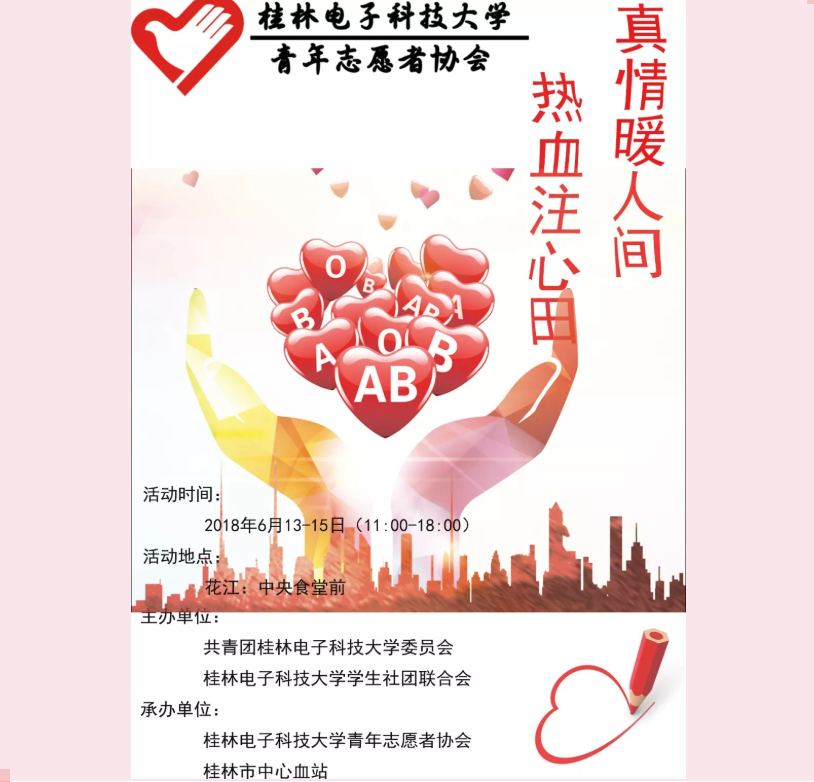

情系与血，爱源于心
桂电志愿者网 日期：2015-08-02 来源： 桂电青协

献血，国内一般理解为无偿献血，台港亦称捐血，是指献血者捐献全血、血浆或血细胞成分，通常情况下献血者不收取任何报酬，采供血机构向献血者赠送低价值的纪念品的过程。
这些血液通常存储在血库中，由医疗单位、血站保管，以备需要者输血时使用。与有偿献血相比，无偿献血的血液质量可以得到保证，有利于受血者的健康和安全。有意献血者可在各地区的固定、流动的献血站、献血屋、献血车完成无偿献血行为。采供血机构会定期安排采血车到学校、单位、人流密集区，或配合有关机构的活动来征求献血者。
1.哪些人可以献血？
年龄18-55周岁的健康公民可以无偿献血，男性≥50公斤，女性≥45公斤，一次献血200～400毫升，捐献全血两次献血间隔期不少于6个月
2.献血有哪些好处？
1、献血对心脑管系统有良好的远期影响 2、可预防、缓解高粘血症 3、男子献血可减少癌症的发生率 4、可促进、改善心理健康 5、经常献血可提高造血功能 献血200毫升是个什么概念？人体内的血液总量约占体重的8%，一般成人的血液总量为4000－5000毫升，而一次献血200毫升仅占总血量的1/20－1/25；在临床医学实践中，一般对失血量在600毫升以下的都不主张输血，可见献血200毫升决不会影响健康而且还会对健康有极大的益处。
3.献血前注意事项有哪些?
1．献血前最好带上身份证 2．献血前两餐不吃高脂或高蛋白食物，如肥肉、鱼、油条等。以防止血液浑浊。 3．当日晨，应吃些清淡饮食，如稀饭、馒头、面包等。注意，献血前不能吃鸡蛋！ 4．适当补充水分，保证血液不太粘稠。 5．献血前心情不要紧张，保持轻松愉快。要知道健康的人按规定适量献血，对身体是没有 任何影响的，千万不要有思想顾虑。 6．献血前一天晚上要早点休息，保证充足的睡眠。 7．献血前最好洗洗澡，换上干净内衣，特别是两个肘腕部要洗干净。 8．在献血现场要听从医务人员的指导，保证整个采血过程井然有序。 9 ．献血前几天应该以素食为主，少吃油腻的食物，也不要吃蛋白质过高的食物，这是为了确保血液的质量，避免血液中出现过敏的物质。 10. 献血前两天如有感冒、发烧、咳嗽等生病症状，应该暂缓献血;女性应避免在月经期间以及前后三天献血。
【责任编辑：桂电青协】